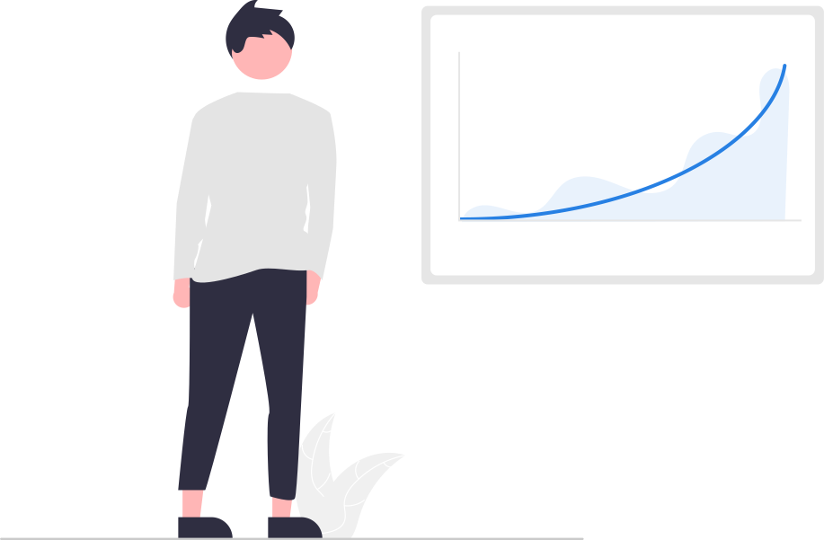
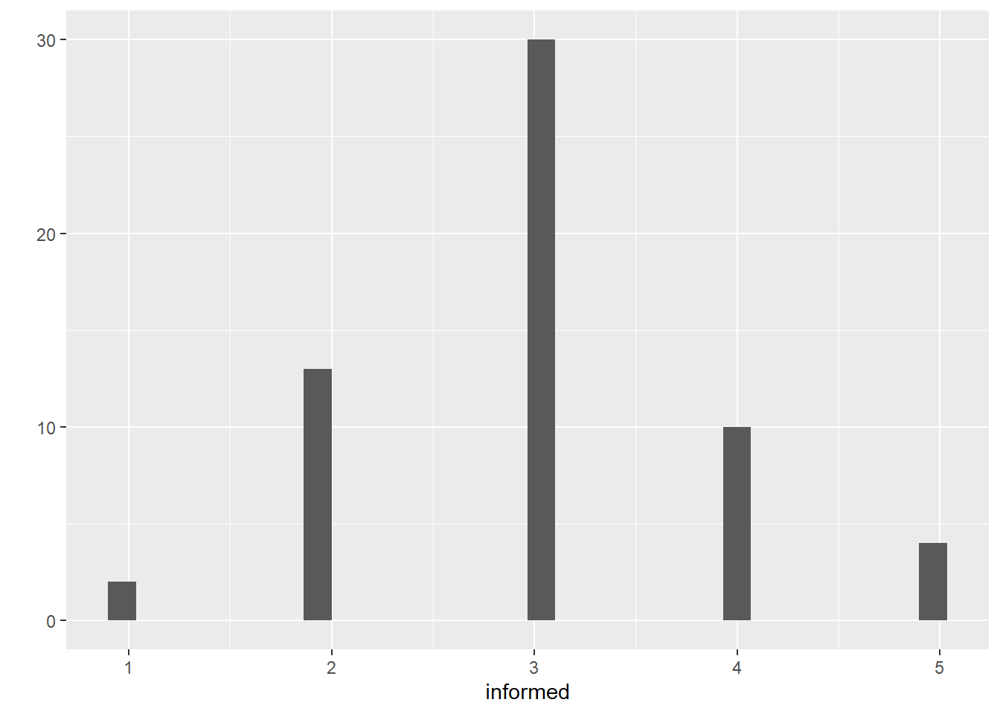
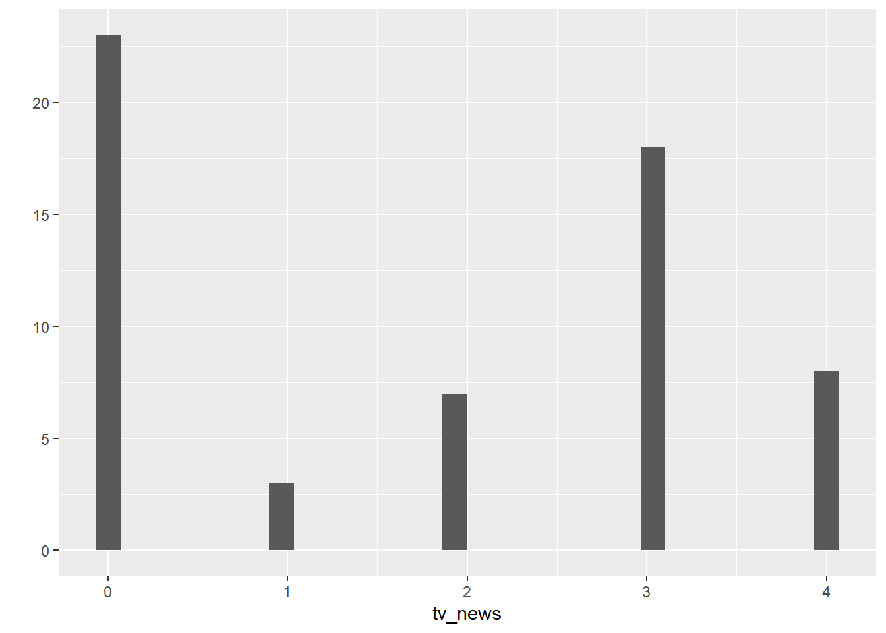
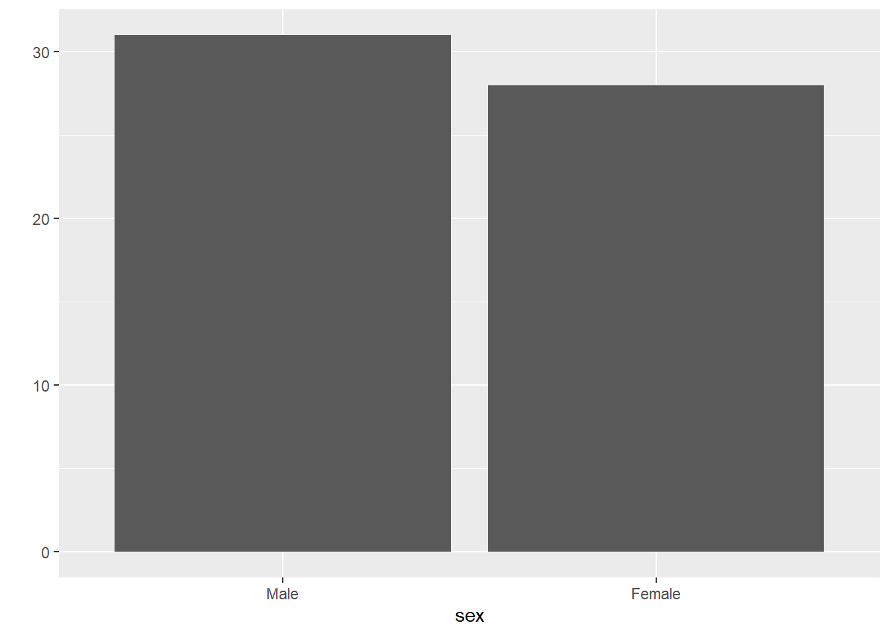
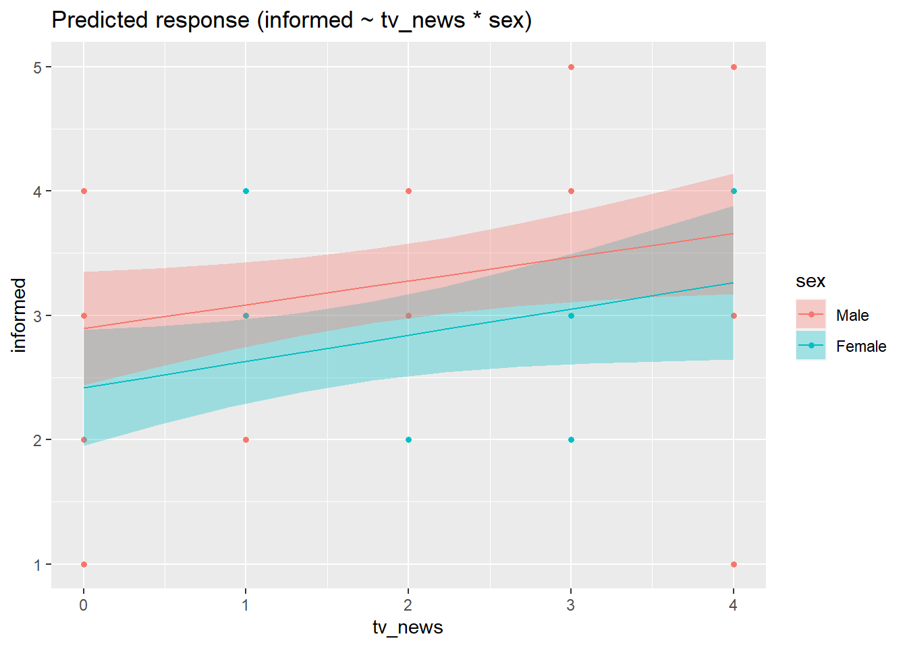
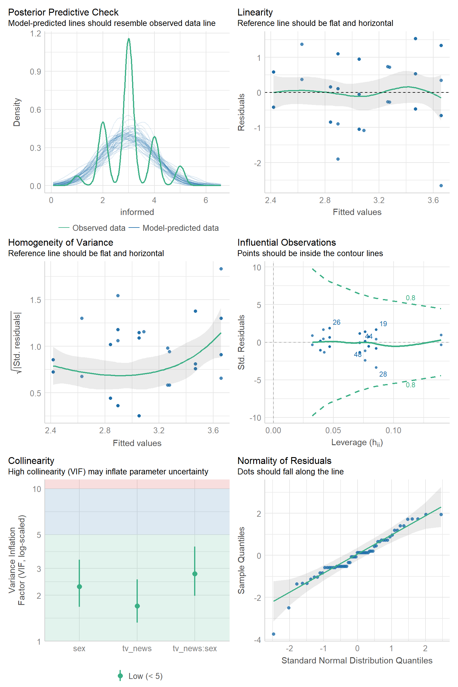

library(tidyverse)
political <- read_csv("political.csv")
political$sex <- factor(
political$sex,
levels = c(0, 1),
labels = c("Male", "Female")
)Day 2B

We continue after lunch with an overview of estimating and probing linear models in R. We will learn the R formula syntax for fitting simple regression, multiple regression, regression with categorical predictors, and regression with interaction effects (i.e., moderation). We will also cover regression diagnostics and easy ways to address common assumption violations. If there is time, we will end with a brief introduction to simple power analysis techniques for \(t\)-tests, ANOVAs, and regression models.
Slides
Data Files
Practice
Download the
politicaldataset from the link above, move it to your project folder, and read it into R. Update the tibble to set thesexvariable as a factor (0=Male, 1=Female).Create histograms to view the distributions of the
informedandtv_newsvariables and a bar plot to view the counts of thesexvariable. What do these distributions look like?Build a regression model to predict each student’s self-reported level of political informedness (
informed) from the degree to which they watch television news (tv_news). What is the standardized slope for the television news predictor? Bonus: What is the model’s adjusted R-squared?Expand your regression model from Question 1(b) to become a multiple regression model that also includes students’ sex (
sex) as a predictor. What are the two predictor variables’ partial effects?Statistically test whether the effect of television watching depends on students’ sex and generate a plot that shows the model’s predictions (to help you interpret any interaction effect).
Click here for the answer key
Answer (a)
Answer (b)
qplot(x = informed, data = political, geom = "histogram")
qplot(x = tv_news, data = political, geom = "histogram")
qplot(x = sex, data = political, geom = "bar")
The
informedvariable is discrete at 1, 2, 3, 4, or 5 with a triangular pattern where 3 is most common. Thetv_newsvariable is discrete at 0, 1, 2, 3, or 4 with a pattern where 0 and 3 are most common. Thesexvariable is relatively balanced between male and female.Answer (c)
library(easystats) fit <- lm(informed ~ tv_news, data = political) model_parameters(fit, standardized = "refit") #> Parameter | Coefficient | SE | 95% CI | t(57) | p #> ---------------------------------------------------------------- #> (Intercept) | 2.64 | 0.17 | [2.31, 2.97] | 15.97 | < .001 #> tv news | 0.21 | 0.07 | [0.07, 0.36] | 3.02 | 0.004 model_performance(fit) #> # Indices of model performance #> #> AIC | AICc | BIC | R2 | R2 (adj.) | RMSE | Sigma #> --------------------------------------------------------------- #> 151.237 | 151.673 | 157.469 | 0.138 | 0.123 | 0.829 | 0.843The standardized slope is 0.21 for
tv_newsand it is significantly different from zero \((p=.004)\). This simple model explains 12% of the variance ininformed\((R^2_{adj}=0.123)\).Answer (d)
fit2 <- lm(informed ~ tv_news + sex, data = political) model_parameters(fit2) #> Parameter | Coefficient | SE | 95% CI | t(56) | p #> ------------------------------------------------------------------- #> (Intercept) | 2.88 | 0.20 | [ 2.48, 3.28] | 14.55 | < .001 #> tv news | 0.20 | 0.07 | [ 0.06, 0.34] | 2.87 | 0.006 #> sex [Female] | -0.44 | 0.22 | [-0.87, -0.01] | -2.06 | 0.044The partial effect of television news was \(0.20\) and the partial effect of sex was \(-0.44\) (females reported feeling/being less informed than males).
Answer (e)
fit3 <- lm(informed ~ tv_news * sex, data = political) model_parameters(fit3) #> Parameter | Coefficient | SE | 95% CI | t(55) | p #> ---------------------------------------------------------------------------- #> (Intercept) | 2.90 | 0.23 | [ 2.44, 3.35] | 12.69 | < .001 #> tv news | 0.19 | 0.09 | [ 0.01, 0.37] | 2.10 | 0.041 #> sex [Female] | -0.48 | 0.33 | [-1.13, 0.18] | -1.46 | 0.149 #> tv news × sex [Female] | 0.02 | 0.14 | [-0.27, 0.31] | 0.14 | 0.887 plot(estimate_relation(fit3))
The effect of television news does not seem to depend on sex, as the interaction effect was not significant \((p=.887)\) and the prediction lines were very close to parallel.
Practice 2.
Use regression diagnostics to check the model from Practice 1 part (e). Are there any obvious issues with this model (e.g., violated assumptions, outliers, multicollinearity)?
Click here for the answer key
Due to the use of a single Likert-style item for the outcome variable, the observedcheck_model(fit3)
informedvalues do not look normal at all (see the posterior predictive check). Additionally, there appears to be some heteroskedasticity with the error variance increasing at the highest fitted values. However, the other checks look okay to me.
Practice 3.
Imagine I want to run a study comparing the spatial recognition memory of currently depressed patients and non-depressed controls. I found a meta-analysis (Rock et al., 2014) that estimated this difference to be \(d=−0.41\). Use {WebPower} to determine how many participants I should recruit in each group in order to have 80% power to detect an effect of this size with \(\alpha=.05\).
Click here for the answer key
library(WebPower) wp.t( power = 0.80, alpha = 0.05, type = "two.sample", d = -0.41 ) ## Two-sample t-test ## ## n d alpha power ## 94.35326 0.41 0.05 0.8 ## ## NOTE: n is number in *each* group ## URL: http://psychstat.org/ttestEach group would need around 94 participants (so around 188 total).
Readings
- Chapter 5: Basic Regression from ModernDive
- Chapter 6: Multiple Regression from ModernDive
- Chapter 10: Inference for Regression from ModernDive
- Checking model assumptions - linear models from performance package website
- WebPower Manual from Zhang & Yuan